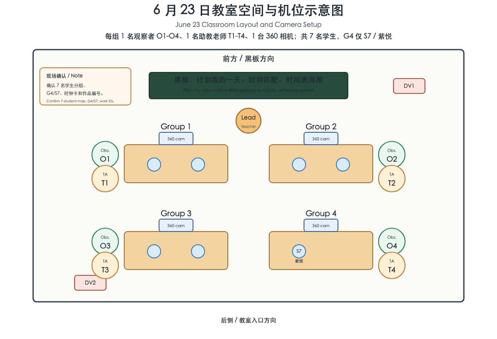
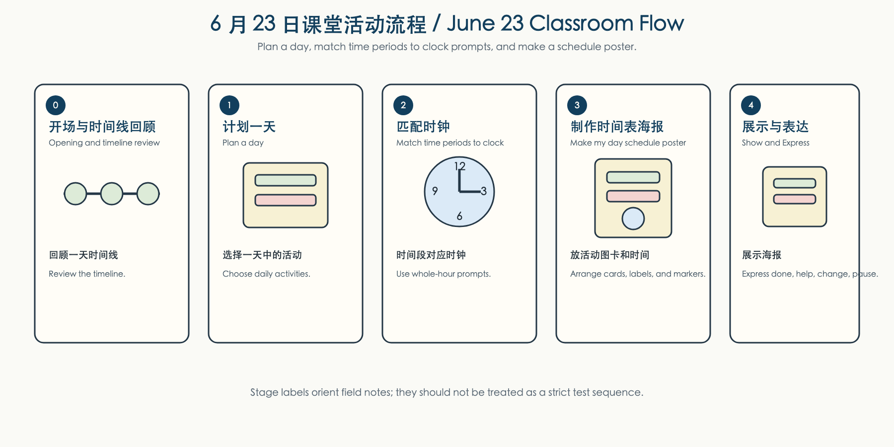

Project: Touch-to-Meaning Version: Researcher version Activity: Plan My Day: Time Periods and Clock Matching Time: June 23, 2026 Participants: lead teacher, assistant teachers, group observers, 7 participating students Duration: About 30 minutes Format: Classroom concept-matching and handcraft activity with teacher support and group-level observation
This workshop continues the one-day timeline sequence. Students review time periods, match those periods to clock prompts, and make a “my day” schedule poster. The activity is designed to observe how learners connect daily routines, time-period concepts, clock representations, tactile materials, and teacher-supported expression.

| Area | Setup | Notes |
|---|---|---|
| Blackboard / front area | Lead Teacher introduces the one-day timeline review, clock matching, and schedule-poster goal. | The front teacher is labeled Lead Teacher, not
T1. |
| Four group tables | Students work in four observation groups unless classroom grouping changes onsite. | Seven students are mapped across the four groups: Groups 1-3 have
two students each, and Group 4 has current S7 only.
Each group has material access, one tabletop 360 camera where feasible,
one observer, and one assistant teacher. |
| Group observers | O1, O2, O3,
O4 |
Observers record visible classroom events, time ranges, concept matching, material actions, expressions, and follow-up questions. |
| Assistant teachers | T1, T2, T3,
T4 |
Assistant teachers support students, model or wait as needed, and avoid turning the matching task into a rigid test. |
| Group 360 cameras | One camera per group table where feasible. | Capture tabletop matching, poster making, material handling, peer action, and teacher proximity. |
| DV overview cameras | Optional front and rear overview positions. | Capture whole-class transitions, lead-teacher instruction, and classroom rhythm. |
| Work collection area | Work ID labels and photo area. | Assign IDs to student works only, not to loose materials. |
Figure note: yellow rectangles show group tables; blue boxes show 360
cameras; red boxes show optional DV overview cameras; green circles show
observers O1-O4; orange circles show assistant teachers
T1-T4. Group 4 has current S7 only; the
previous S8 label should be read as the current
S7 student in display records unless it appears in a raw
filename or archive path.
These tasks happen before class and are not part of the student-facing activity.
| Time | Lead | Task | Output |
|---|---|---|---|
| 30-20 min before | Hongni | Confirm room layout, consent boundary, group labels, work ID rule, clock prompts, schedule-poster material set, and lead-teacher introduction. | Layout and consent boundary confirmed |
| 20-10 min before | Research team | Set up group 360 cameras, optional DV overview cameras, battery/storage checks, and short test clips. | Camera-file baseline |
| 10-5 min before | Observers and assistant teachers | Confirm O1-O4 and T1-T4 assignments.
Teachers support students; observers record field notes. |
Role map confirmed |
| 10-5 min before | O4 | Prepare transfer station: SD-card case, card reader/adapter, Hard Drive A, Hard Drive B, laptop, charging cable, and file-naming note. | Transfer station ready |
| During class | Lead Teacher and T1-T4 | Facilitate planning, clock matching, and poster making without forcing all students into the same micro-step at the same time. | Classroom flow maintained |
| During class | O1-O4 | Record key field-note episodes tied to group, time range, time-period/clock matching, material/action, teacher support, and evidence source. | Group field-note traces |
| 0-10 min after | O2 | Collect final artifacts, check work IDs, photograph every final work, and confirm each photo links to group/student/work ID. | Artifact photos and work-ID map |
| 0-10 min after | O3 | Stop recording, power off, remove, and collect all devices and accessories. | Equipment return checklist |
| 0-20 min after | O4 | Transfer every SD card to both hard drives, verify file counts and file sizes, and keep SD cards in the labeled case after transfer. | Two-drive transfer record |

The main flow is to plan a day, match time periods to clock prompts, and make a schedule poster. The stages are classroom orientation labels and field-note anchors, not strict time blocks.
| Stage | Label | Student-facing action | Observation focus |
|---|---|---|---|
| 0 | Opening and Timeline Review | Review the one-day timeline and hear the schedule-poster goal. | Starting state, attention to model, transition into planning. |
| 1 | Plan a Day | Choose daily activities and place them into broad time periods. | Activity choice, sequence, daily-routine references, support needed. |
| 2 | Match Time Periods to Clock | Match morning/noon/afternoon/evening prompts to clock cards or whole-hour positions. | Clock attention, hand position, matching, correction, assistance, interpretation boundary. |
| 3 | Make My Day Schedule Poster | Place activity cards, time-period labels, clock prompts, and tactile markers on the poster. | Material choice, poster organization, persistence, repair, substitution, peer or teacher influence. |
| 4 | Show and Express | Show the poster, indicate done/continue/help/change/pause/stop, or respond to teacher questions. | Multimodal expression, teacher interpretation, artifact-state evidence. |
| Role | Main focus during class | After-class task |
|---|---|---|
| O1 | Group-level field notes: visible planning, clock matching, expression, support, peer interaction, artifact changes, and questions to confirm. | Submit observer field notes with group, time range, work ID, evidence link, and interpretation limit. |
| O2 | Group-level field notes when possible; watch final artifact status during the closing period. | Collect final artifacts, photograph every work, and confirm work ID / group / student mapping. |
| O3 | Group-level field notes when possible; monitor device status during the activity. | Collect all equipment: 360 cameras, DV cameras if used, tripods, mounts, batteries, chargers, cables, hard drives, adapters/card readers, SD cards, and related accessories. |
| O4 | Group-level field notes when possible; keep the transfer station ready after class. | Transfer all SD-card files to both hard drives, verify counts/sizes, and record any missing or failed transfer. |
| T1-T4 | Support group participation, model only when needed, wait when useful, and help students regulate materials or task load. | Teachers do not need to write field notes. They may review the Chinese field-note summary or clarify interpretations after class. |
| Lead Teacher | Introduce planning and clock matching, keep whole-class rhythm, invite flexible progress, and close with show/expression. | Confirm any teacher interpretations that should guide later video review. |
| Research coordinator | Check consent, camera-file mapping, work IDs, and post-class consolidation. | Build the source map linking field notes, video, photos, works, and consent boundaries. |
| Check | Category | Brief note |
|---|---|---|
| □ | Class information | Date, time, location, 7-student grouping, teacher count |
| □ | Role mapping | O1-O4, T1-T4, Lead Teacher, camera
position, work ID range |
| □ | Camera-file mapping | Group 360 files and optional DV overview files |
| □ | Artifact-photo mapping | O2 checks work ID, group/student link, and final artifact photo names |
| □ | Equipment return | O3 checks cameras, tripods, SD cards, hard drives, adapters, cables, chargers, batteries, mounts, and accessories |
| □ | Two-drive data transfer | O4 transfers every SD card to both hard drives and verifies counts/sizes |
| □ | Student participation | Engagement, waiting, help-seeking, returning to task, completion |
| □ | Day-planning behavior | Activity-card choice, time-period placement, sequence, daily-routine reference |
| □ | Clock matching | Time-period prompt, clock card, hand position, whole-hour relation, support needed |
| □ | Material interaction | Choosing, touching, pressing, placing, moving, repeating, avoiding, substituting |
| □ | Schedule-poster making | Activity cards, time labels, clock prompts, tactile markers, decoration, repair, change history |
| □ | Teacher and assistant-teacher support | Prompting, modeling, waiting, assisting, simplifying, replacing materials, emotional support |
| □ | Student expression | Done, continue, change, help, pause, stop, refuse, emotion or body-orientation change |
| □ | Student works | Work ID, photo, material use, clock/time match, completion state |
| □ | Consent boundary | Any identifiable data or uncertain recording status held for review |
| ID | Action | Owner | Due | Status |
|---|---|---|---|---|
| A1 | Confirm final group, observer, and assistant-teacher mapping | |||
| A2 | Confirm consent boundary for research analysis | |||
| A3 | Prepare work ID labels and photo area | |||
| A4 | Confirm all group 360 camera positions and filenames | |||
| A5 | Confirm optional DV overview positions and filenames | |||
| A6 | Collect observer field notes from O1-O4 | Research coordinator | Same day | |
| A7 | Photograph final artifacts and link work IDs to groups/students | O2 | Same day | |
| A8 | Collect all cameras, tripods, hard drives, adapters, SD cards, chargers, cables, batteries, mounts, and accessories | O3 | Same day | |
| A9 | Transfer every SD card to both hard drives and verify file counts/sizes | O4 | Same day | |
| A10 | Hold SD cards in labeled case until two-drive transfer is confirmed | O4 | Same day |
The current analysis record uses the June 18 setup correction in
plan/classroom_setup_history_june2_22_2026-06-18.md. Across
June 2 through June 23, use the seven-student mapping; Group 4 has only
current S7. Remove the previous S7 /
former participant entry from current setup summaries, and treat prior S8
labels for S7 as raw-source metadata rather than the current display
code.